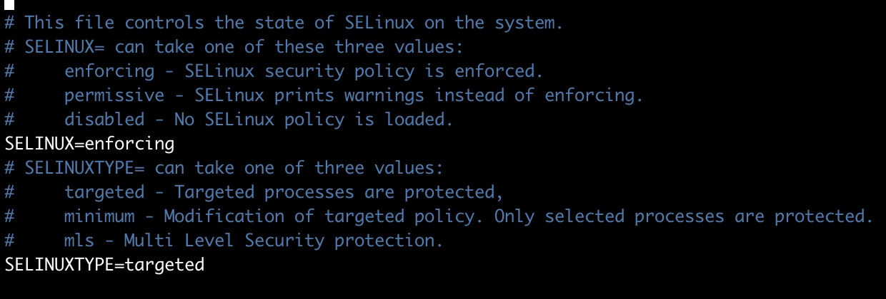

容器生命周期管理
- run 创建一个新的容器并运行一个命令
eg: docker run -d --name nginx -p 80:80 -v /docker/nginx:/etc/nginx/conf.d nginx:latest
说明： 使用镜像nginx:latest以后台模式启动一个容器,将容器的80端口映射到主机的80端口,主机的目录/docker/nginx/conf.d 映射到容器的 /etc/nginx/conf.d
docker run [OPTIONS] IMAGE [COMMAND] [ARG...]
-a stdin: 指定标准输入输出内容类型，可选 STDIN/STDOUT/STDERR 三项；
-d: 后台运行容器，并返回容器ID；
-i: 以交互模式运行容器，通常与 -t 同时使用；
-P: 随机端口映射，容器内部端口随机映射到主机的高端口
-p: 指定端口映射，格式为：主机(宿主)端口:容器端口
-t: 为容器重新分配一个伪输入终端，通常与 -i 同时使用；
--name="nginx-lb": 为容器指定一个名称；
--dns 8.8.8.8: 指定容器使用的DNS服务器，默认和宿主一致；
--dns-search example.com: 指定容器DNS搜索域名，默认和宿主一致；
-h "mars": 指定容器的hostname；
-e username="ritchie": 设置环境变量；
--env-file=[]: 从指定文件读入环境变量；
--cpuset="0-2" or --cpuset="0,1,2": 绑定容器到指定CPU运行；
-m :设置容器使用内存最大值；
--net="bridge": 指定容器的网络连接类型，支持 bridge/host/none/container: 四种类型；
--link=[]: 添加链接到另一个容器；
--expose=[]: 开放一个端口或一组端口；
--volume , -v: 绑定一个卷
注意： 关于容器的输出以及配置的文件一定要挂载到宿主机上
配置文件
日志文件
业务数据
数据卷容器：
创建数据卷容器 data
docker run -d --name data -v /home/godson/docker/nginx/conf.d:/etc/nginx/conf.d -v /home/godson/docker/mysql/conf:/etc/mysql hello-world
创建容器挂载到 data 容器数据卷上 (volumes-from参数)
docker run -d --name nginx -p 80:80 --volumes-from data nginx
- start/stop/restart
start： 启动一个或多个已被停止的容器
stop： 停止一个或多个运行中的容器
restart: 重启一个或多个容器
kill 杀掉一个运行中的容器
rm 删除一个或多个容器
-f :通过SIGKILL信号强制删除一个运行中的容器
-l :移除容器间的网络连接，而非容器本身
-v :-v 删除与容器关联的卷
docker rm -fv 删除容器服务
pause/unpause 暂停/恢复 容器中的所有进程
create 创建一个新容器，但是不启动它
语法同 runexec
> docker exec -it nginx /bin/bash
-d :分离模式: 在后台运行
-i :即使没有附加也保持STDIN 打开
-t :分配一个伪终端
容器操作
- ps 列出容器
-a :显示所有的容器，包括未运行的。
-f :根据条件过滤显示的内容。
--format :指定返回值的模板文件。
-l :显示最近创建的容器。
-n :列出最近创建的n个容器。
--no-trunc :不截断输出。
-q :静默模式，只显示容器编号。
-s :显示总的文件大小。
- inspect 获取容器/镜像的元数据。
docker inspect -f '{{.NetworkSettings.IPAddress}}' nginx
-f :指定返回值的模板文件。
-s :显示总的文件大小。
--type :为指定类型返回JSON。
- top
- attach
- events
- logs
-f : 跟踪日志输出
--since :显示某个开始时间的所有日志
-t : 显示时间戳
--tail :仅列出最新N条容器日志
- wait
- export
- port 列出指定的容器的端口映射，或者查找将PRIVATE_PORT NAT到面向公众的端口。
> docker port nginx
80/tcp -> 0.0.0.0:8080
容器rootfs命令
- commit 从容器创建一个新的镜像。
docker commit [OPTIONS] CONTAINER [REPOSITORY[:TAG]]
docker commit -a "作者" -m "描述" nginx mynginx:v1 - cp
容器和宿主机的文件传输 nginx:表示了容器目录
docker cp nginx:/etc/nginx/conf.ddefault.conf ./ - diff
镜像仓库
- login
- pull
- push
- search
本地镜像管理
- images 列出本地镜像。
-a :列出本地所有的镜像（含中间映像层，默认情况下，过滤掉中间映像层）；
--digests :显示镜像的摘要信息；
-f :显示满足条件的镜像；
--format :指定返回值的模板文件；
--no-trunc :显示完整的镜像信息；
-q :只显示镜像ID。
- rmi
- tag 标记本地镜像，将其归入某一仓库。
docker tag [OPTIONS] IMAGE[:TAG] [REGISTRYHOST/][USERNAME/]NAME[:TAG]
将镜像ubuntu:15.10标记为 w3cschool/ubuntu:v3 镜像
docker tag nginx w3cschool/ubuntu:v3
- build 使用Dockerfile创建镜像。
> docker build -t w3cschool/ubuntu:v1 ./
> docker build -f /home/user/Dockerfile ./
--build-arg=[] :设置镜像创建时的变量；
--cpu-shares :设置 cpu 使用权重；
--cpu-period :限制 CPU CFS周期；
--cpu-quota :限制 CPU CFS配额；
--cpuset-cpus :指定使用的CPU id；
--cpuset-mems :指定使用的内存 id；
--disable-content-trust :忽略校验，默认开启；
-f :指定要使用的Dockerfile路径； -f /path/to/a/Dockerfile .
--force-rm :设置镜像过程中删除中间容器；
--isolation :使用容器隔离技术；
--label=[] :设置镜像使用的元数据；
-m :设置内存最大值；
--memory-swap :设置Swap的最大值为内存+swap，"-1"表示不限swap；
--no-cache :创建镜像的过程不使用缓存；
--pull :尝试去更新镜像的新版本；
-q :安静模式，成功后只输出镜像ID；
--rm :设置镜像成功后删除中间容器；
--shm-size :设置/dev/shm的大小，默认值是64M；
--ulimit :Ulimit配置。
--tag, -t: 镜像的名字及标签，通常 name:tag 或者 name 格式；可以在一次构建中为一个镜像设置多个标签。
--network: 默认 default。在构建期间设置RUN指令的网络模式
history
save
import
info|version
info
version
获取 selinux 是否关闭
getenforce
暂时关闭
setenforce 1
vi /etc/sysconfig/selinux

SELINUX=disable